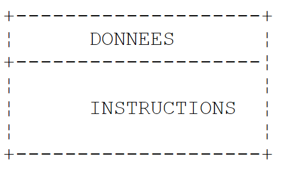
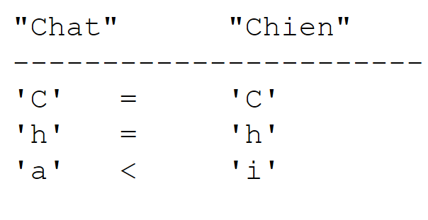

3. Noções básicas da linguagem C#
3.1. Introdução
Começaremos por tratar o C# como uma linguagem de programação clássica. Abordaremos as classes mais tarde. Existem dois elementos num programa:
- dados
- as instruções que os processam
Geralmente, tentamos separar os dados das instruções:
 |
3.2. Dados em C#
O C# utiliza os seguintes tipos de dados:
- números inteiros
- números reais
- números decimais
- caracteres e cadeias de caracteres
- booleanos
- objetos
3.2.1. Tipos de dados predefinidos
Tipo C# | Tipo .NET | Dados representados | Sufixo Valores literais | Codificação | Domínio de valores |
Caractere (S) | caractere | 2 bytes | caractere Unicode (UTF-16) | ||
Cadeia de caracteres (C) | cadeia de caracteres | referência a uma sequência de caracteres Unicode | |||
Int32 (S) | número inteiro | 4 bytes | [-2³¹; 2³¹-1] [-2147483648; 2147483647] | ||
UInt32 (S) | .. | U | 4 bytes | [0, 2³²-1] [0, 4294967295] | |
Int64 (S) | .. | L | 8 bytes | [-263, 263 -1] [-9223372036854775808, 9223372036854775807] | |
UInt64 (S) | .. | UL | 8 bytes | [0, 264 -1] [0, 18446744073709551615] | |
.. | 1 byte | [-27, 27 -1] [-128, +127] | |||
Byte(s) | .. | 1 byte | [0, 28 -1] [0,255] | ||
Int16 (S) | .. | 2 bytes | [-215, 215-1] [-32768, 32767] | ||
UInt16 (S) | .. | 2 bytes | [0, 216-1] [0,65535] | ||
Simples (S) | número real | F | 4 bytes | [1,5 × 10⁻⁴⁵, 3,4 × 10³⁸ em termos absolutos | |
Duplo (S) | .. | D | 8 bytes | [-1,7 × 10³⁰⁸, 1,7 × 10³⁰⁸ em termos absolutos | |
Decimal (S) | número decimal | M | 16 bytes | [1,0 10⁻²⁸,7,9 10⁺²⁸] em valor absoluto com 28 dígitos significativos | |
Booleano (S) | .. | 1 byte | verdadeiro, falso | ||
Objeto (C) | referência a objeto | referência a objeto |
Acima, os tipos C# são indicados pelo seu tipo .NET equivalente, com o comentário (S) se o tipo for uma estrutura e (C) se o tipo for uma classe. Verificou-se que existem dois tipos possíveis para um inteiro de 32 bits: int e Int32. O tipo int é um tipo C#. Int32 é uma estrutura pertencente ao System. O seu nome completo é System.Int32. O tipo int é um alias C# para a estrutura .NET System.Int32. Da mesma forma, a string C# é um alias para o tipo .NET System.String. System.String é uma classe e não uma estrutura. Os dois conceitos são semelhantes, mas com a seguinte diferença fundamental:
- uma variável do tipo Estrutura pode ser manipulada através do seu valor
- uma variável do tipo Class pode ser manipulada através do seu endereço (referência na linguagem de objetos).
Uma estrutura, tal como uma classe, é um tipo complexo com atributos e métodos. Por exemplo, podemos escrever:
Acima, o literal 3 é, por predefinição em C#, do tipo int, do tipo .NET System.Int32. Esta estrutura possui um método GetType() que devolve um objeto que encapsula as características do tipo de dados System.Int32. Estas incluem a propriedade FullName, que devolve o nome completo do tipo. Como se pode ver, o literal 3 é mais complexo do que parece à primeira vista.
Aqui está um programa que ilustra estes pontos:
using System;
namespace Chap1 {
class P00 {
static void Main(string[] args) {
// example 1
int ent = 2;
float fl = 10.5F;
double d = -4.6;
string s = "essai";
uint ui = 5;
long l = 1000;
ulong ul = 1001;
byte octet = 5;
short sh = -4;
ushort ush = 10;
decimal dec = 10.67M;
bool b = true;
Console.WriteLine("Type de ent[{1}] : [{0},{2}]", ent.GetType().FullName, ent,sizeof(int));
Console.WriteLine("Type de fl[{1}]: [{0},{2}]", fl.GetType().FullName, fl, sizeof(float));
Console.WriteLine("Type de d[{1}] : [{0},{2}]", d.GetType().FullName, d, sizeof(double));
Console.WriteLine("Type de s[{1}] : [{0}]", s.GetType().FullName, s);
Console.WriteLine("Type de ui[{1}] : [{0},{2}]", ui.GetType().FullName, ui, sizeof(uint));
Console.WriteLine("Type de l[{1}] : [{0},{2}]", l.GetType().FullName, l, sizeof(long));
Console.WriteLine("Type de ul[{1}] : [{0},{2}]", ul.GetType().FullName, ul, sizeof(ulong));
Console.WriteLine("Type de b[{1}] : [{0},{2}]", octet.GetType().FullName, octet, sizeof(byte));
Console.WriteLine("Type de sh[{1}] : [{0},{2}]", sh.GetType().FullName, sh, sizeof(short));
Console.WriteLine("Type de ush[{1}] : [{0},{2}]", ush.GetType().FullName, ush, sizeof(ushort));
Console.WriteLine("Type de dec[{1}] : [{0},{2}]", dec.GetType().FullName, dec, sizeof(decimal));
Console.WriteLine("Type de b[{1}] : [{0},{2}]", b.GetType().FullName, b, sizeof(bool));
}
}
}
- linha 7: declaração de um inteiro ent
- linha 19: o tipo de uma variável v pode ser obtido através de v.GetType().FullName. O tamanho de uma estrutura S pode ser obtido através de sizeof(S). A instrução Console.WriteLine("... {0} ... {1} ...", param0, param1, ...) escreve no ecrã o texto que é o seu primeiro parâmetro, substituindo cada notação por {i} pelo valor da expressão parami.
- linha 22: o operador de tipo string não pode ser utilizado, uma vez que designa uma classe e não uma estrutura sizeof.
Eis o resultado:
A exibição apresenta tipos .NET, não aliases C#.
3.2.2. Notação de dados literais
145, -7, 0xFF (hexadecimal) | |
100000L | |
134,789, -45E-18 (-45 × 10⁻¹⁸) | |
134,789F, -45E-18F (-45 × 10⁻¹⁸) | |
100000M | |
'A', 'b' | |
"hoje" "c:\cap1\parágrafo3" @"c:\cap1\parágrafo3" | |
verdadeiro, falso | |
new DateTime(1954,10,13) (ano, mês, dia) para 13/10/1954 |
Repare nas duas cadeias literais: "c:\chap1\\paragraph3" e @"c:\chap1\paragraph3". Nas cadeias literais, o carácter \ é interpretado. Assim, "\n" representa o marcador de fim de linha e não a sucessão dos dois caracteres \ e n. Se quiséssemos essa sucessão, teríamos de escrever "\\n", onde a sequência é interpretada como um único carácter \. Também pode escrever @"\n" para obter o mesmo resultado. A sintaxe @"texto" exige que o texto seja interpretado exatamente como está escrito. Isto é por vezes chamado de cadeia de caracteres literal.
3.2.3. Relatórios de dados
3.2.3.1. Papel das declarações
Um programa manipula dados caracterizados por um nome e um tipo. Estes dados são armazenados na memória. Quando o programa é traduzido, o compilador atribui a cada item de dados uma localização na memória caracterizada por um endereço e um tamanho. Faz isto com a ajuda das declarações feitas pelo programador.
Elas também permitem que o compilador detecte erros de programação. Por exemplo, o
x=x*2;
será declarado como errado se x for uma cadeia de caracteres, por exemplo.
3.2.3.2. Declaração de constantes
A sintaxe para declarar uma constante é a seguinte:
Por exemplo:
Por que declarar constantes?
- O programa será mais fácil de ler se for atribuído um nome significativo à constante:
- A modificação do programa será mais fácil se a «constante» mudar. Por exemplo, no caso anterior, se a taxa de IVA mudar para 33%, a única modificação a fazer será alterar a instrução que define o seu valor:
Se 0,186 tivesse sido utilizado explicitamente no programa, muitas instruções teriam de ser modificadas.
3.2.3.3. Declaração de variáveis
Uma variável é identificada por um nome e refere-se a um tipo de dados. O C# distingue maiúsculas de minúsculas. Assim, FIN e end são diferentes.
As variáveis podem ser inicializadas quando são declaradas. A sintaxe para declarar uma ou mais variáveis é:
onde Identificador_de_tipo é um tipo predefinido ou um tipo definido pelo programador. Opcionalmente, uma variável pode ser inicializada, bem como declarada.
Também é possível evitar especificar o tipo exato de uma variável utilizando a palavra-chave var em vez de Identificador_de_tipo:
A palavra-chave var não significa que as variáveis não tenham um tipo específico. A variável variablei tem o tipo de dados valuei que lhe foi atribuído. A inicialização é aqui obrigatória para que o compilador possa deduzir o tipo da variável.
Eis um exemplo:
using System;
namespace Chap1 {
class P00 {
static void Main(string[] args) {
int i=2;
Console.WriteLine("Type de int i=2 : {0},{1}",i.GetType().Name,i.GetType().FullName);
var j = 3;
Console.WriteLine("Type de var j=3 : {0},{1}", j.GetType().Name, j.GetType().FullName);
var aujourdhui = DateTime.Now;
Console.WriteLine("Type de var aujourdhui : {0},{1}", aujourdhui.GetType().Name, aujourdhui.GetType().FullName);
}
}
}
- linha 6: dados explicitamente tipados
- linha 7: (data).GetType().Name é o nome abreviado de (data), (data).GetType().FullName é o nome completo de (data)
- linha 8: dados tipados implicitamente. Como 3 é do tipo int, j será do tipo int.
- linha 10: dados tipados implicitamente. Como o tipo DateTime.Now é DateTime, o tipo today será DateTime.
Na execução, obtemos o seguinte resultado:
Uma variável tipada implicitamente pela palavra-chave var não pode, posteriormente, mudar de tipo. Por exemplo, após a linha 10 do código, a linha:
var aujourdhui = "aujourd'hui";
Veremos mais tarde que é possível declarar um tipo «em tempo real» numa expressão. Neste caso, trata-se de um anónimo, um tipo ao qual o utilizador não atribuiu um nome. O compilador atribuirá um nome a este novo tipo. Se um anónimo for atribuído a uma variável, a única forma de o declarar é utilizar a palavra-chave var.
3.2.4. Conversões entre números e cadeias de caracteres
nombre.ToString() | |
int.Parse(string) ou System.Int32.Parse | |
long.Parse(string) ou System.Int64.Parse | |
double.Parse(string) ou System.Double.Parse(string) | |
float.Parse(string) ou System.Float.Parse(string) |
A conversão de uma string num número pode falhar se a string não representar um número válido. Um erro fatal chamado exception. Este erro pode ser tratado pelo try/catch a seguir:
try{
appel de la fonction susceptible de générer l'exception
} catch (Exception e){
traiter l'exception e
}
instruction suivante
Se a função não gerar uma exceção, passamos à instrução seguinte; caso contrário, passamos ao corpo da cláusula catch e, em seguida, à instrução seguinte. Voltaremos ao tratamento de exceções mais tarde. Aqui está um programa que demonstra algumas técnicas para a conversão entre números e cadeias de caracteres. Neste exemplo, a função poster escreve o valor do seu parâmetro no ecrã. Assim, poster(S) escreve o valor de S no ecrã, sendo que S é do tipo cadeia de caracteres.
using System;
namespace Chap1 {
class P01 {
static void Main(string[] args) {
// data
const int i = 10;
const long l = 100000;
const float f = 45.78F;
double d = -14.98;
// number --> string
affiche(i.ToString());
affiche(l.ToString());
affiche(f.ToString());
affiche(d.ToString());
//boolean --> string
const bool b = false;
affiche(b.ToString());
// string --> int
int i1;
i1 = int.Parse("10");
affiche(i1.ToString());
try {
i1 = int.Parse("10.67");
affiche(i1.ToString());
} catch (Exception e) {
affiche("Erreur : " + e.Message);
}
// chain --> long
long l1;
l1 = long.Parse("100");
affiche(l1.ToString());
try {
l1 = long.Parse("10.675");
affiche(l1.ToString());
} catch (Exception e) {
affiche("Erreur : " + e.Message);
}
// chain --> double
double d1;
d1 = double.Parse("100,87");
affiche(d1.ToString());
try {
d1 = double.Parse("abcd");
affiche(d1.ToString());
} catch (Exception e) {
affiche("Erreur : " + e.Message);
}
// string --> float
float f1;
f1 = float.Parse("100,87");
affiche(f1.ToString());
try {
d1 = float.Parse("abcd");
affiche(f1.ToString());
} catch (Exception e) {
affiche("Erreur : " + e.Message);
}
}// fine hand
public static void affiche(string S) {
Console.Out.WriteLine("S={0}",S);
}
}// end of class
}
As linhas 30-32 tratam da possível exceção que pode ocorrer. e.Message é a mensagem de erro associada à exceção e.
Os resultados são os seguintes:
Note que os números reais na forma de cadeia de caracteres devem utilizar a vírgula e não o ponto decimal. Assim, escrevemos
mas
3.2.5. Tabelas de dados
Uma matriz em C# é um objeto utilizado para agrupar dados do mesmo tipo sob o mesmo identificador. A sua declaração é a seguinte:
n é o número de elementos de dados que a matriz pode conter. A sintaxe Table[i] designa o dado n.º i, onde i pertence ao intervalo [0,n-1]. Qualquer referência ao dado Table[i] em que i não pertença ao intervalo [0,n-1] irá provocar uma exceção. Uma matriz pode ser inicializada, bem como declarada:
ou simplesmente:
As matrizes têm uma propriedade chamada Length, que corresponde ao número de elementos da matriz.
Uma matriz bidimensional pode ser declarada da seguinte forma:
Type[,] array=new Type[n,m];
onde n é o número de linhas e m o número de colunas. A sintaxe Table[i,j] designa o elemento j na linha i da tabela. A matriz bidimensional também pode ser inicializada ao mesmo tempo que é declarada:
ou simplesmente:
O número de elementos em cada dimensão pode ser obtido utilizando GetLength(i), onde i=0 representa a dimensão correspondente ao 1.º índice, i=1 a dimensão correspondente ao 2.º índice, ...
O número total de dimensões é obtido com a propriedade Rank, e o número total de elementos com a propriedade Length.
Uma tabela de tabelas é declarada da seguinte forma:
Type[][] array = new Type[n][];
A instrução acima cria uma matriz de n linhas. Cada elemento table[i] é uma referência a uma matriz unidimensional. Estas referências array[i] não são inicializadas na declaração acima. O seu valor é a referência nula.
O exemplo seguinte ilustra a criação de uma matriz de tabelas:
// un tableau de tableaux
string[][] noms = new string[3][];
for (int i = 0; i < noms.Length; i++) {
noms[i] = new string[i + 1];
}//for
// initialisation
for (int i = 0; i < noms.Length; i++) {
for (int j = 0; j < noms[i].Length; j++) {
noms[i][j] = "nom" + i + j;
}//for j
}//for i
- linha 2: uma tabela «names» de 3 string[][]. Cada elemento é um ponteiro para uma matriz (uma referência a um objeto) cujos elementos são do tipo string[].
- linhas 3-5: os 3 elementos da tabela names são inicializados. Cada um «aponta» agora para uma matriz de elementos do tipo string[]. names[i][j] é a matriz do tipo string[] referenciada por names[i].
- linha 9: inicialização do elemento names[i][j] dentro de um ciclo duplo. Aqui, names[i] é uma matriz de i+1 elementos. Como names[i] é uma matriz, names[i].Length é o seu número de elementos.
Aqui está um exemplo dos três tipos de tabela que acabámos de apresentar:
using System;
namespace Chap1 {
// tables
using System;
// test class
public class P02 {
public static void Main() {
// an initialized 1-dimensional array
int[] entiers = new int[] { 0, 10, 20, 30 };
for (int i = 0; i < entiers.Length; i++) {
Console.Out.WriteLine("entiers[{0}]={1}", i, entiers[i]);
}//for
// an initialized 2-dimensional array
double[,] réels = new double[,] { { 0.5, 1.7 }, { 8.4, -6 } };
for (int i = 0; i < réels.GetLength(0); i++) {
for (int j = 0; j < réels.GetLength(1); j++) {
Console.Out.WriteLine("réels[{0},{1}]={2}", i, j, réels[i, j]);
}//for j
}//for i
// a table of tables
string[][] noms = new string[3][];
for (int i = 0; i < noms.Length; i++) {
noms[i] = new string[i + 1];
}//for
// initialization
for (int i = 0; i < noms.Length; i++) {
for (int j = 0; j < noms[i].Length; j++) {
noms[i][j] = "nom" + i + j;
}//for j
}//for i
// display
for (int i = 0; i < noms.Length; i++) {
for (int j = 0; j < noms[i].Length; j++) {
Console.Out.WriteLine("noms[{0}][{1}]={2}", i, j, noms[i][j]);
}//for j
}//for i
}//Main
}//class
}//namespace
Após a execução, obtemos os seguintes resultados:
3.3. Instruções básicas de C#
É feita uma distinção entre
1 as instruções básicas executadas pelo computador.
2 instruções para controlar a sequência do programa.
As instruções elementares tornam-se claras quando se considera a estrutura de um microcomputador e dos seus periféricos.
 |
-
leitura de informações a partir do teclado
-
processamento de informação
-
exibição de informação no ecrã
3.3.1. Escrever no ecrã
Existem diferentes instruções para escrever no ecrã:
Console.Out.WriteLine(expression)
Console.WriteLine(expression)
Console.Error.WriteLine (expression)
onde expressão é qualquer tipo de dados que possa ser convertido numa cadeia de caracteres para exibição no ecrã. Todos os objetos C# ou .NET têm um método ToString() que é utilizado para realizar esta conversão.
A classe System.Console dá acesso a operações de escrita no ecrã (Write, WriteLine). A classe Console tem duas propriedades, Out e Error, que são do tipo TextWriter:
- Console.WriteLine() é equivalente a Console.Out.WriteLine() e escreve no fluxo Out, normalmente associado ao ecrã.
- Console.Error.WriteLine() escreve no fluxo Error, normalmente associado ao ecrã.
Os fluxos Out e Error podem ser redirecionados para ficheiros de texto durante a execução do programa, como veremos em breve.
3.3.2. Leitura de dados digitados
O fluxo de dados proveniente do teclado é representado pelo objeto Console.In do tipo TextReader. Este tipo de objeto pode ser utilizado para ler uma linha de texto utilizando o método ReadLine :
A classe Console oferece um método ReadLine associado por predefinição a In. Podemos, portanto, escrever:
A linha digitada no teclado é armazenada na variável ligne e pode então ser utilizada pelo programa. O fluxo In pode ser redirecionado para um ficheiro, tal como o Out e o Error.
3.3.3. Exemplo de entrada-saída
Eis um pequeno programa para ilustrar operações de E/S de teclado/ecrã:
using System;
namespace Chap1 {
// test class
public class P03 {
public static void Main() {
// write to Out feed
object obj = new object();
Console.Out.WriteLine(obj);
// write to the Error stream
int i = 10;
Console.Error.WriteLine("i=" + i);
// reading a line entered on the keyboard
Console.Write("Tapez une ligne : ");
string ligne = Console.ReadLine();
Console.WriteLine("ligne={0}", ligne);
}//fine hand
}//end of class
}
- linha 9: obj é uma referência a um objeto
- linha 10: obj é exibido no ecrã. Por predefinição, é chamado o método obj.ToString().
- linha 14: também pode escrever:
Console.Error.WriteLine("i={0}",i);
O primeiro parâmetro "i={0}" é o formato de exibição, os outros parâmetros são as expressões a serem exibidas. Os elementos {n} são parâmetros "posicionais". Em tempo de execução, o parâmetro {n} é substituído pelo valor da expressão n.º n.
O resultado é o seguinte:
- linha 1: o resultado apresentado pela linha 10 do código. O obj.ToString() apresentou o nome do tipo da variável obj: System.Object. O tipo object é um alias C# do tipo .NET System.Object.
3.3.4. Redirecionamento de E/S
No DOS e no UNIX, existem três dispositivos padrão chamados:
- dispositivo de entrada padrão - por predefinição, o teclado e é numerado como 0
- dispositivo de saída padrão - por predefinição, é o ecrã e tem o número 1
- dispositivo de erro padrão - por predefinição, é o ecrã e tem o número 2
Em C#, o Console.Out escreve no dispositivo 1, o fluxo de escrita Console.Error é escrito no dispositivo 2 e o fluxo de leitura Console.In lê dados do dispositivo 0.
Quando executa um programa no DOS ou no Unix, pode definir quais os dispositivos 0, 1 e 2 que serão utilizados pelo programa executado. Considere a seguinte linha de comando:
Por trás do programa argi pg, os dispositivos de E/S padrão podem ser redirecionados para ficheiros:
o fluxo de entrada padrão n.º 0 é redirecionado para o ficheiro in.txt. No programa, o Console.In irá, portanto, obter os seus dados do ficheiro in.txt. | |
redireciona a saída n.º 1 para o ficheiro out.txt. Isto significa que, no programa, o Console.Out irá escrever os seus dados no ficheiro out.txt | |
idem, mas os dados gravados são adicionados ao conteúdo atual do ficheiro out.txt. | |
redireciona a saída n.º 2 para o ficheiro error.txt. Isto significa que, no programa, o Console.Error irá escrever os seus dados no ficheiro error.txt | |
idem, mas os dados gravados são adicionados ao conteúdo atual do ficheiro error.txt. | |
Os dispositivos 1 e 2 são ambos redirecionados para |
Note que, para redirecionar fluxos de E/S do pg para ficheiros, o pg não precisa de ser modificado. O sistema operativo determina a natureza dos periféricos 0, 1 e 2. Considere o seguinte programa:
using System;
namespace Chap1 {
// redirections
public class P04 {
public static void Main(string[] args) {
// lecture flux In
string data = Console.In.ReadLine();
// write Out feed
Console.Out.WriteLine("écriture dans flux Out : " + data);
// écriture flux Error
Console.Error.WriteLine("écriture dans flux Error : " + data);
}//Main
}//class
}
Vamos gerar o executável deste código-fonte:
 |
- em [1]: o executável é criado clicando com o botão direito do rato no projeto / Compilar
- em [2]: numa janela do DOS, o executável 04.exe foi criado na pasta bin/Release do projeto.
Vamos executar os seguintes comandos na janela do DOS [2]:
- linha 1: a string test no ficheiro in.txt
- linhas 2-3: exibição do conteúdo do ficheiro in.txt para verificação
- linha 4: execução do programa 04.exe. O fluxo In é redirecionado para o in.txt, o fluxo Out para o out.txt, o fluxo Error para o err.txt. A execução não gera qualquer exibição.
- linhas 5-6: conteúdo do ficheiro out.txt. Este conteúdo mostra-nos que:
- o ficheiro in.txt foi lido
- a exibição no ecrã foi redirecionada para o ficheiro out.txt
- linhas 7-8: verificação semelhante para o ficheiro err.txt
Podemos ver claramente que os fluxos Out e In não escrevem nos mesmos dispositivos, uma vez que foram redirecionados separadamente.
3.3.5. Atribuir o valor de uma expressão a uma variável
Estamos aqui interessados na operação variável=expressão;
A expressão pode ser do tipo: aritmética, relacional, booleana, caracteres
3.3.5.1. Interpretação da operação de atribuição
A operação variável=expressão;
é, ela própria, uma expressão cuja avaliação ocorre da seguinte forma:
- o lado direito da atribuição é avaliado: o resultado é um valor V.
- o valor V é atribuído à variável
- o valor V é também o valor da atribuição, desta vez considerada como uma expressão.
É assim que o
é válida. Devido à prioridade, o operador = mais à direita será avaliado. Temos, portanto,
A expressão V2=expressão é avaliada e atribuída ao valor V. A avaliação desta expressão fez com que V fosse atribuído a V2. O operador = seguinte é então avaliado como:
O valor desta expressão continua a ser V. A sua avaliação faz com que V seja atribuído a V1.
Portanto, a expressão V1=V2
é uma expressão cuja avaliação
- faz com que o valor de expressão seja atribuído às variáveis V1 e V2
- resulte no valor da expressão.
Isto pode ser generalizado para uma expressão como:
3.3.5.2. Expressão aritmética
Os operadores para expressões aritméticas são os seguintes:
-
adição
-
subtração
* multiplicação
/ divisão: o resultado é o quociente exato se pelo menos um dos operandos for real. Se ambos os operandos forem inteiros, o resultado é o quociente inteiro. Assim, 5/2 -> 2 e 5,0/2 -> 2,5.
% divisão: o resultado é o resto, independentemente da natureza dos operandos, sendo o quociente um número inteiro. Trata-se, portanto, da operação módulo.
Existem várias funções matemáticas. Aqui estão algumas delas:
raiz quadrada | |
cosseno | |
seno | |
Tangente | |
x elevado a y (x>0) | |
Exponencial | |
Logaritmo natural | |
valor absoluto |
etc...
Todas estas funções estão definidas numa classe C# chamada Math. Quando utilizadas, devem ser precedidas pelo nome da classe em que estão definidas. Por exemplo, escreva:
A definição completa da classe Math é a seguinte:


3.3.5.3. Prioridades para a avaliação de expressões aritméticas
A prioridade dos operadores na avaliação de uma expressão aritmética é a seguinte (da prioridade mais alta para a mais baixa):
Os operadores no mesmo bloco [ ] têm a mesma prioridade.
3.3.5.4. Expressões relacionais
Os operadores são os seguintes:
prioridades dos operadores
O resultado de uma expressão relacional é o valor booleano falso se a expressão for falsa, verdadeiro caso contrário.
Comparação de duas características
Consideremos dois caracteres C1 e C2. Podem ser comparados utilizando os operadores
Os seus códigos Unicode, que são números, são então comparados. Na ordem Unicode, temos as seguintes relações:
Comparar duas cadeias de caracteres
São comparadas caractere a caractere. A primeira desigualdade encontrada entre dois caracteres induz uma desigualdade com o mesmo significado nas cadeias de caracteres.
Exemplos:
Compare as cadeias de caracteres «Cat» e «Dog»
 |
Esta última desigualdade significa que «Gato» < «Cão».
Ou compare as cadeias «Gato» e «Gatinho». Há um empate constante até que a cadeia «Gato» se esgote. Neste caso, a cadeia esgotada é declarada como a «menor». Temos, portanto, a relação
Funções para comparar duas cadeias de caracteres
Pode utilizar os operadores relacionais == e != para verificar a igualdade entre duas cadeias de caracteres, ou a classe Equals de System.String. Para relações < <= > >=, utilize a classe CompareTo de System.String:
using System;
namespace Chap1 {
class P05 {
static void Main(string[] args) {
string chaine1="chat", chaine2="chien";
int n = chaine1.CompareTo(chaine2);
bool egal = chaine1.Equals(chaine2);
Console.WriteLine("i={0}, egal={1}", n, egal);
Console.WriteLine("chien==chaine1:{0},chien!=chaine2:{1}", "chien"==chaine1,"chien" != chaine2);
}
}
}
Na linha 7, a variável i terá o valor:
0 se ambas as cadeias forem iguais
1 se o canal 1 > canal 2
-1 se a cadeia n.º 1 < a cadeia n.º 2
Na linha 8, a variável egal terá o valor true se ambas as cadeias forem iguais; caso contrário, terá o valor false. A linha 10 utiliza os operadores == e != para verificar se duas cadeias de caracteres são iguais ou não.
Resultados da execução:
3.3.5.5. Expressões booleanas
Os operadores que podem ser utilizados são AND (&&), OR (||) e NOT (!). O resultado de uma expressão booleana é um valor booleano.
prioridades dos operadores:
- !
- &&
- ||
double x = 3.5;
bool valide = x > 2 && x < 4;
Os operadores relacionais têm os operadores de prioridade && e ||.
3.3.5.6. Processamento de bits
Operadores
Sejam i e j dois números inteiros.
desloca i n bits para a esquerda. Os bits resultantes são zeros. | |
desloca i n bits para a direita. Se i for um inteiro com sinal (signed char, int, long), o bit de sinal é preservado. | |
realiza a operação lógica ET de i e j, bit a bit. | |
realiza a operação lógica OU de i e j, bit a bit. | |
complementa i para 1 | |
realiza a OR EXCLUSIVA de i e j |
Ou o seguinte código:
short i = 100, j = -13;
ushort k = 0xF123;
Console.WriteLine("i=0x{0:x4}, j=0x{1:x4}, k=0x{2:x4}", i,j,k);
Console.WriteLine("i<<4=0x{0:x4}, i>>4=0x{1:x4},k>>4=0x{2:x4},i&j=0x{3:x4},i|j=0x{4:x4},~i=0x{5:x4},j<<2=0x{6:x4},j>>2=0x{7:x4}", i << 4, i >> 4, k >> 4, (short)(i & j), (short)(i | j), (short)(~i), (short)(j << 2), (short)(j >> 2));
- o formato {0:x4} apresenta o parâmetro n.º 0 no formato hexadecimal (x) com 4 caracteres (4).
Os resultados são os seguintes:
3.3.5.7. Combinação de operadores
a=a+b pode ser escrito como a+=b
a=a-b pode ser escrito como a-=b
O mesmo se aplica aos operadores /, %, *, <<, >>, &, |, ^. Assim, a=a/2; pode ser escrito como a/=2;
3.3.5.8. Operadores de incremento e decremento
A notação variable++ significa variable=variable+1 ou mesmo variable+=1
A expressão variable-- significa variable=variable-1 ou mesmo variable-=1.
3.3.5.9. O operador ternário?
A expressão
é avaliada da seguinte forma:
1 a expressão expr_cond é avaliada. Trata-se de uma expressão condicional com um valor real ou falso
2 Se for verdadeira, o valor da expressão é o de expr1 e expr2 não é avaliada.
3 Se for falso, ocorre o contrário: o valor da expressão é o de expr2 e expr1 não é avaliada.
A operação i=(j>4 ? j+1:j-1); será atribuída à variável i: j+1 se j>4, j-1 caso contrário. É o mesmo que escrever if(j>4) i=j+1; else i=j-1; mas é mais conciso.
3.3.5.10. Prioridade geral dos operadores
gd | |
dg | |
dg | |
gd | |
gd | |
gd | |
gd | |
gd | |
gd | |
gd | |
gd | |
gd | |
gd | |
dg | |
dg |
gd indica que, para prioridades iguais, é observada a prioridade da esquerda para a direita. Isto significa que, quando existem operadores de prioridade igual numa expressão, o operador mais à esquerda na expressão é avaliado primeiro. dg indica prioridade da direita para a esquerda.
3.3.5.11. Alterações de tipo
Numa expressão, pode alterar momentaneamente a codificação de um valor. Isto é conhecido como alteração do tipo de dados ou conversão de tipos. A sintaxe para alterar o tipo de um valor numa expressão é a seguinte:
O valor assume então o tipo indicado. Isto leva a uma alteração na codificação do valor.
using System;
namespace Chap1 {
class P06 {
static void Main(string[] args) {
int i = 3, j = 4;
float f1=i/j;
float f2=(float)i/j;
Console.WriteLine("f1={0}, f2={1}",f1,f2);
}
}
}
- na linha 7, f1 terá o valor 0,0. A divisão 3/4 é uma divisão inteira, uma vez que ambos os operandos são do tipo int.
- linha 8, (float)i é o valor de i transformado em float. Agora temos uma divisão entre um real do tipo float e um inteiro do tipo int. Esta é a divisão entre números reais. O valor de j também será transformado em um float, depois dividir-se-ão os dois reais. f2 terá então o valor 0,75.
Aqui estão os resultados:
Em (float)i :
- i é um valor codificado exato de 2 bytes
- (float) i é o mesmo valor codificado como uma aproximação real de 4 bytes
O valor de i. Esta transcodificação ocorre apenas durante o cálculo, e a variável i mantém sempre o seu tipo int.
3.4. Instruções de controlo de fluxo do programa
3.4.1. Parar
A instrução Exit definida no Ambiente interrompe a execução do programa.
syntaxe void Exit(int status)
action arrête le processus en cours et rend la valeur status au processus père
Exit encerra o processo atual e devolve o controlo ao processo chamador. O valor de status pode ser utilizado por este. No DOS, esta variável de status é representada na variável de sistema ERRORLEVEL, cujo valor pode ser verificado num ficheiro batch. No Unix, com o interpretador de comandos Shell Bourne, a variável $? recupera o valor de status.
irá interromper a execução do programa com um valor de status de 0.
3.4.2. Estrutura de escolha simples
notas:
- a condição é colocada entre parênteses.
- cada ação é terminada por um ponto e vírgula.
- As chaves não são terminadas por ponto e vírgula.
- as chaves só são necessárias se houver mais do que uma ação.
- A cláusula else pode estar ausente.
- Não existe a cláusula then.
O equivalente algorítmico desta estrutura é o if .. then ... otherwise :
 |
exemplo
if (x>0) { nx=nx+1;sx=sx+x;} else dx=dx-x;
As estruturas de escolha podem ser aninhadas:
Por vezes, surge o seguinte problema:
using System;
namespace Chap1 {
class P07 {
static void Main(string[] args) {
int n = 5;
if (n > 1)
if (n > 6)
Console.Out.WriteLine(">6");
else Console.Out.WriteLine("<=6");
}
}
}
No exemplo anterior, o else da linha 10 refere-se a qual if? A regra é que um else refere-se sempre ao if mais próximo: if(n>6), linha 8, no exemplo. Considere outro exemplo:
if (n2 > 1) {
if (n2 > 6) Console.Out.WriteLine(">6");
} else Console.Out.WriteLine("<=1");
Aqui, queríamos colocar um «else» no «if(n2>1)» e nenhum «else» no «if(n2>6)». Devido à observação anterior, somos obrigados a colocar chaves no «if(n2>1) {...} else ...»
3.4.3. Estrutura de caso
A sintaxe é a seguinte:
switch(expression) {
case v1:
actions1;
break;
case v2:
actions2;
break;
. .. .. .. .. ..
default:
actions_sinon;
break;
}
notas
- o valor do switch pode ser um número inteiro, um caractere ou uma cadeia de caracteres
- a expressão está entre parênteses.
- A cláusula default pode estar ausente.
- os valores vi são valores possíveis da expressão. Se o valor da expressão for vi, as ações associadas à cláusula case vi são executadas.
- A instrução break leva-nos para fora da estrutura case.
- cada bloco de instruções ligado a um valor vi deve terminar com uma instrução de ramificação (break, goto, return, ...); caso contrário, o compilador reporta um erro.
exemplo
Visite algoritmos
selon la valeur de choix
cas 0
fin du module
cas 1
exécuter module M1
cas 2
exécuter module M2
sinon
erreur<--vrai
findescas
Em C#
3.4.4. Estruturas de repetição
3.4.4.1. Número conhecido de repetições
Estrutura para
A sintaxe é a seguinte:
for (i=id;i<=if;i=i+ip){
actions;
}
Notas
- os 3 argumentos de for estão entre parênteses e separados por ponto e vírgula.
- cada for é terminado por um ponto e vírgula.
- A chave só é necessária se houver mais do que uma ação.
- A chave não é seguida por um ponto e vírgula.
O equivalente algorítmico é o for :
o que pode ser traduzido como:
Estrutura foreach
A sintaxe é a seguinte:
foreach (Type variable in collection)
instructions;
}
Notas
- collection é uma coleção de objetos enumeráveis. A coleção de objetos enumeráveis que já conhecemos é a matriz
- Tipo é o tipo dos objetos na coleção. Para uma matriz, este seria o tipo dos elementos da matriz
- A variável é uma variável local do ciclo que assumirá sucessivamente como seu valor todos os valores da coleção.
Assim, o código seguinte:
string[] amis = { "paul", "hélène", "jacques", "sylvie" };
foreach (string nom in amis) {
Console.WriteLine(nom);
}
mostraria:
3.4.4.2. Número de repetições desconhecido
Existem muitas estruturas em C# para este caso.
Estrutura while
while(condition){
actions;
}
O ciclo repete-se enquanto a condição for verificada. O ciclo pode nunca ser executado.
notas:
- A condição está entre parênteses.
- cada ação é terminada por um ponto e vírgula.
- a chave só é necessária se houver mais do que uma ação.
- a chave não é seguida de ponto e vírgula.
A estrutura algorítmica correspondente é tantque :
Repetir estrutura até (do while)
A sintaxe é a seguinte:
do{
instructions;
}while(condition);
Repetimos o ciclo até que a condição se torne falsa. Aqui, o ciclo é executado pelo menos uma vez.
notas
- A condição está entre parênteses.
- cada ação é terminada por um ponto e vírgula.
- a chave só é necessária se houver mais do que uma ação.
- a chave não é seguida de ponto e vírgula.
A estrutura algorítmica correspondente é repeat ... until :
Estrutura para o geral (para)
A sintaxe é a seguinte:
for(instructions_départ;condition;instructions_fin_boucle){
instructions;
}
O ciclo é executado enquanto a condição for verdadeira (avaliada antes de cada iteração do ciclo). As instruções_iniciais são executadas antes de entrar no ciclo pela primeira vez. As instruções_finais_do_ciclo são executadas após cada iteração do ciclo.
notas
- as várias instruções em instructions_depart e instructions_fin_boucle são separadas por vírgulas.
A estrutura algorítmica correspondente é a seguinte:
Exemplos
Os seguintes fragmentos de código calculam todos a soma dos primeiros 10 números inteiros.
int i, somme, n=10;
for (i = 1, somme = 0; i <= n; i = i + 1)
somme = somme + i;
for (i = 1, somme = 0; i <= n; somme = somme + i, i = i + 1) ;
i = 1; somme = 0;
while (i <= n) { somme += i; i++; }
i = 1; somme = 0;
do somme += i++;
while (i <= n);
3.4.4.3. Instruções de gestão de loops
Saídas para loop, while, do ... while. | |
avança os loops for, while, do ... para a próxima iteração. while |
3.5. Tratamento de exceções
Muitas funções em C# são suscetíveis de gerar exceções, ou seja, erros. Quando uma função é suscetível de gerar uma exceção, o programador deve gerir essa situação com o objetivo de obter programas mais resistentes a erros: deve evitar sempre o «bloqueio» repentino de uma aplicação.
Uma exceção é tratada da seguinte forma:
try{
code susceptible de générer une exception
} catch (Exception e){
traiter l'exception e
}
instruction suivante
Se a função não gerar uma exceção, passamos para a instrução seguinte; caso contrário, passamos para o corpo da cláusula catch e, em seguida, para a instrução seguinte. Tenha em atenção os seguintes pontos:
- e é um objeto do tipo Exception ou derivado. Pode ser mais preciso utilizando tipos como IndexOutOfRangeException, FormatException, SystemException, etc.: existem vários tipos de exceção. Ao escrever catch (Exception e), indica que pretende tratar todos os tipos de exceção. Se o código no try for suscetível de gerar vários tipos de exceção, poderá querer ser mais preciso, gerindo a exceção com vários catch:
try{
code susceptible de générer les exceptions
} catch ( IndexOutOfRangeException e1){
traiter l'exception e1
}
} catch ( FormatException e2){
traiter l'exception e2
}
instruction suivante
- Podemos adicionar às cláusulas try/catch uma cláusula finally:
try{
code susceptible de générer une exception
} catch (Exception e){
traiter l'exception e
}
finally{
code exécuté après try ou catch
}
instruction suivante
Quer haja ou não uma exceção, o código da cláusula finally será sempre executado.
- No catch, pode não querer utilizar a Exception disponível. Em vez de escrever catch (Exception e){..}, escrevemos catch(Exception){...} ou simplesmente catch {...}.
- A classe Exception possui uma propriedade Message, que é uma mensagem que detalha o erro que ocorreu. Portanto, se quisermos exibir essa mensagem, escreveremos:
catch (Exception ex){
Console.WriteLine("L'erreur suivante s'est produite : {0}",ex.Message);
...
}//catch
- A classe Exception possui um método ToString que devolve uma cadeia de caracteres indicando o tipo de exceção e o valor da Message. Podemos, assim, escrever:
catch (Exception ex){
Console.WriteLine("L'erreur suivante s'est produite : {0}", ex.ToString());
...
}//catch
Também podemos escrever:
O compilador atribuirá ao parâmetro {0} o valor ex.ToString().
O exemplo seguinte mostra uma exceção gerada pela utilização de um elemento de matriz inexistente:
using System;
namespace Chap1 {
class P08 {
static void Main(string[] args) {
// declaring & initializing an array
int[] tab = { 0, 1, 2, 3 };
int i;
// table display with for
for (i = 0; i < tab.Length; i++)
Console.WriteLine("tab[{0}]={1}", i, tab[i]);
// table display with a for each
foreach (int élmt in tab) {
Console.WriteLine(élmt);
}
// generating an exception
try {
tab[100] = 6;
} catch (Exception e) {
Console.Error.WriteLine("L'erreur suivante s'est produite : " + e);
return;
}//try-catch
finally {
Console.WriteLine("finally ...");
}
}
}
}
Acima, a linha 18 irá gerar uma exceção porque a tabela não possui o elemento n.º 100. A execução do programa produz os seguintes resultados:
- linha 9: ocorreu a exceção [System.IndexOutOfRangeException]
- linha 11: a cláusula finally (linhas 23-25) do código foi executada, apesar de a linha 21 conter uma instrução return para sair do método. Note-se que a cláusula finally é sempre executada.
Aqui está outro exemplo de como lidar com a exceção causada pela atribuição de uma string a uma variável inteira quando a string não representa um inteiro:
using System;
namespace Chap1 {
class P08 {
static void Main(string[] args) {
// example 2
// We ask for the name
Console.Write("Nom : ");
// reading response
string nom = Console.ReadLine();
// age requested
int age = 0;
bool ageOK = false;
while (!ageOK) {
// question
Console.Write("âge : ");
// read-verify answer
try {
age = int.Parse(Console.ReadLine());
ageOK = age>=1;
} catch {
}//try-catch
if (!ageOK) {
Console.WriteLine("Age incorrect, recommencez...");
}
}//while
// final display
Console.WriteLine("Vous vous appelez {0} et vous avez {1} an(s)",nom,age);
}
}
}
- linhas 15-27: o ciclo para introduzir a idade de uma pessoa
- linha 20: a linha digitada no teclado é transformada num inteiro utilizando o int.Parse. Este método lança uma exceção se a conversão não for possível. É por isso que a operação foi colocada num try / catch.
- linhas 22-23: se for lançada uma exceção, passamos para o catch, onde nada é feito. Assim, a variável booleana ageOK, posicionada em false na linha 14, permanecerá false.
- linha 21: se chegar a esta linha, a conversão string -> int foi bem-sucedida. No entanto, verifique se o inteiro obtido é maior ou igual a 1.
- linhas 24-26: é emitida uma mensagem de erro se a idade estiver incorreta.
Alguns resultados de desempenho:
3.6. Exemplo de aplicação - V1
Propomos escrever um programa para calcular o imposto sobre o rendimento de um contribuinte. O caso simplificado é o de um contribuinte que apenas tem o seu salário para declarar (valores de 2004 relativos aos rendimentos de 2003):
- o número de quotas de empregado é calculado como nbParts = nbEnfants/2 + 1 se solteiro, nbEnfants/2 + 2 se casado, onde nbEnfants é o número de filhos.
- se tiver pelo menos três filhos, recebe mais meia quota
- Calcule o seu rendimento tributável R = 0,72 * S, sendo S o seu salário anual
- calcule o seu coeficiente familiar QF=R/nbParts
- calcule o seu imposto I. Considere a seguinte tabela:
4262 | 0 | 0 |
8382 | 0,0683 | 291,09 |
14753 | 0,1914 | 1322,92 |
23888 | 0,2826 | 2668,39 |
38868 | 0,3738 | 4846,98 |
47932 | 0,4262 | 6883,66 |
0 | 0,4809 | 9505,54 |
Cada linha tem 3 campos. Para calcular o imposto I, procure a primeira linha em que QF <= champ1. Por exemplo, se QF = 5000, encontramos a linha
O Imposto I é então igual a 0,0683*R - 291,09*nbParts. Se QF for tal que a relação QF<=champ1 nunca seja verificada, então são utilizados os coeficientes da última linha. Aqui:
0 0,4809 9505,54
o que dá o imposto I = 0,4809*R - 9505,54*nbParts.
O programa C# correspondente é o seguinte:
using System;
namespace Chap1 {
class Impots {
static void Main(string[] args) {
// data tables required for tax calculation
decimal[] limites = { 4962M, 8382M, 14753M, 23888M, 38868M, 47932M, 0M };
decimal[] coeffR = { 0M, 0.068M, 0.191M, 0.283M, 0.374M, 0.426M, 0.481M };
decimal[] coeffN = { 0M, 291.09M, 1322.92M, 2668.39M, 4846.98M, 6883.66M, 9505.54M };
// marital status is restored
bool OK = false;
string reponse = null;
while (!OK) {
Console.Write("Etes-vous marié(e) (O/N) ? ");
reponse = Console.ReadLine().Trim().ToLower();
if (reponse != "o" && reponse != "n")
Console.Error.WriteLine("Réponse incorrecte. Recommencez");
else OK = true;
}//while
bool marie = reponse == "o";
// number of children
OK = false;
int nbEnfants = 0;
while (!OK) {
Console.Write("Nombre d'enfants : ");
try {
nbEnfants = int.Parse(Console.ReadLine());
OK = nbEnfants >= 0;
} catch {
}// try
if (!OK) {
Console.WriteLine("Réponse incorrecte. Recommencez");
}
}// while
// salary
OK = false;
int salaire = 0;
while (!OK) {
Console.Write("Salaire annuel : ");
try {
salaire = int.Parse(Console.ReadLine());
OK = salaire >= 0;
} catch {
}// try
if (!OK) {
Console.WriteLine("Réponse incorrecte. Recommencez");
}
}// while
// calculating the number of shares
decimal nbParts;
if (marie) nbParts = (decimal)nbEnfants / 2 + 2;
else nbParts = (decimal)nbEnfants / 2 + 1;
if (nbEnfants >= 3) nbParts += 0.5M;
// taxable income
decimal revenu = 0.72M * salaire;
// family quotient
decimal QF = revenu / nbParts;
// search for tax bracket corresponding to QF
int i;
int nbTranches = limites.Length;
limites[nbTranches - 1] = QF;
i = 0;
while (QF > limites[i]) i++;
// tax
int impots = (int)(coeffR[i] * revenu - coeffN[i] * nbParts);
// the result is displayed
Console.WriteLine("Impôt à payer : {0} euros", impots);
}
}
}
- linhas 7-9: os valores numéricos têm o sufixo M (Money) para serem do tipo decimal.
- linha 16:
- Console.ReadLine() torna a cadeia C1 tipada
- C1.Trim() remove os espaços à esquerda e à direita C1 - gera uma cadeia C2
- C2.ToLower() transforma a cadeia C3, que é a cadeia C2 convertida para minúsculas.
- linha 21: a variável booleana marie recebe o valor true ou false, dependendo de answer=="o"
- linha 29: a string digitada no teclado é transformada num int. Se a transformação falhar, é lançada uma exceção.
- linha 30: a variável booleana OK recebe o valor true ou false, dependendo da relação nbEnfants>=0
- linhas 55-56: não se pode simplesmente escrever nbEnfants/2. Se nbEnfants fosse igual a 3, teríamos 3/2, uma divisão inteira que daria 1 e não 1,5. Por isso, escrevemos (decimal)nbEnfants para tornar um dos operandos da divisão real e, assim, ter uma divisão entre reais.
Eis alguns exemplos:
Etes-vous marié(e) (O/N) ? oui
Réponse incorrecte. Recommencez
Etes-vous marié(e) (O/N) ? o
Nombre d'enfants : trois
Réponse incorrecte. Recommencez
Nombre d'enfants : 3
Salaire annuel : 60000 euros
Réponse incorrecte. Recommencez
Salaire annuel : 60000
Impôt à payer : 2959 euros
3.7. Principais argumentos do programa
A função principal Main pode aceitar uma matriz de cadeias de caracteres como parâmetro: String[] (ou string[]). Esta tabela contém os argumentos da linha de comandos utilizados para iniciar a aplicação. Por exemplo, se executarmos o programa P com o seguinte comando (Dos):
P arg0 arg1 … argn
e se a função Main for declarada da seguinte forma:
args[0]="arg0", args[1]="arg1" ... Aqui está um exemplo:
using System;
namespace Chap1 {
class P10 {
static void Main(string[] args) {
// list parameters received
Console.WriteLine("Il y a " + args.Length + " arguments");
for (int i = 0; i < args.Length; i++) {
Console.Out.WriteLine("arguments[" + i + "]=" + args[i]);
}
}
}
}
Para passar argumentos para o código executado, proceda da seguinte forma:
 |
- em [1]: clique com o botão direito do rato no projeto / Propriedades
- em [2]: separador [Depuração]
- em [3]: introduza os argumentos
A execução produz os seguintes resultados:
Note que o
é válido se o Main não espera parâmetros.
3.8. Enumerações
Uma enumeração é um tipo de dados cujo domínio de valores é um conjunto de constantes inteiras. Consideremos um programa que tem de gerir as notas de um exame. Seriam cinco: Razoável, Bastante Bom, Bom, Muito Bom, Excelente.
Poderíamos então definir uma enumeração para estas cinco constantes:
enum Mentions { Passable, AssezBien, Bien, TrèsBien, Excellent };
Internamente, estas cinco constantes são codificadas por números inteiros consecutivos, começando por 0 para a primeira constante, 1 para a seguinte, etc... Uma variável pode ser declarada para assumir estes valores na enumeração:
// une variable qui prend ses valeurs dans l'énumération Mentions
Mentions maMention = Mentions.Passable;
Uma variável pode ser comparada com os vários valores possíveis na enumeração:
if (maMention == Mentions.Passable) {
Console.WriteLine("Peut mieux faire");
}
Pode obter todos os valores da enumeração:
// list of statements in string form
foreach (Mentions m in Enum.GetValues(maMention.GetType())) {
Console.WriteLine(m);
}
Da mesma forma que o tipo simples int é equivalente a System.Int32, o tipo simples enum é equivalente a System.Enum. Esta estrutura possui um método estático GetValues que permite obter todos os valores de um tipo enumerado que lhe é passado como parâmetro. Este deve ser um objeto do tipo Type, que é uma classe de informação sobre o tipo de dados. O tipo de uma variável v é obtido por v.GetType(). O tipo de T é obtido por typeof(T). Assim, aqui maMention.GetType() fornece o objeto Type da enumeração Mentions e Enum.GetValues(maMention.GetType()) a lista de valores da enumeração Mentions.
Se agora escrevermos
//list of mentions in integer form
foreach (int m in Enum.GetValues(typeof(Mentions))) {
Console.WriteLine(m);
}
Na linha 2, a variável do loop é do tipo inteiro. Obtemos então a lista de valores de enumeração na forma de inteiros. O objeto do tipo System.Type correspondente ao tipo de dados Mentions é obtido por typeof(Mentions). Poderíamos ter escrito maMention.GetType().
O programa seguinte ilustra o que acabou de ser escrito:
using System;
namespace Chap1 {
class P11 {
enum Mentions { Passable, AssezBien, Bien, TrèsBien, Excellent };
static void Main(string[] args) {
// a variable that takes its values from the Mentions enumeration
Mentions maMention = Mentions.Passable;
// variable value display
Console.WriteLine("mention=" + maMention);
// test with enumeration value
if (maMention == Mentions.Passable) {
Console.WriteLine("Peut mieux faire");
}
// list of statements in string form
foreach (Mentions m in Enum.GetValues(maMention.GetType())) {
Console.WriteLine(m);
}
//list of mentions in integer form
foreach (int m in Enum.GetValues(typeof(Mentions))) {
Console.WriteLine(m);
}
}
}
}
Os resultados são os seguintes:
3.9. Passar parâmetros para uma função
Estamos aqui interessados na forma como os parâmetros são passados para uma função. Considere a seguinte função estática:
private static void ChangeInt(int a) {
a = 30;
Console.WriteLine("Paramètre formel a=" + a);
}
Na definição da função, linha 1, a é chamado de parâmetro formal. Ele existe apenas para definir a função changeInt. Poderia muito bem ter sido chamado de b. Vamos agora considerar uma utilização desta função:
public static void Main() {
int age = 20;
ChangeInt(age);
Console.WriteLine("Paramètre effectif age=" + age);
}
Aqui, na instrução da linha 3, ChangeInt(idade), idade é o parâmetro efetivo que transmitirá o seu valor ao parâmetro formal a. Estamos interessados em saber como um parâmetro formal recupera o valor de um parâmetro efetivo.
3.9.1. Passagem por valor
O exemplo seguinte mostra que, por predefinição, os parâmetros da função são passados por valor, ou seja, o valor do parâmetro real é copiado para o parâmetro formal correspondente. Temos duas entidades distintas. Se a função modificar o parâmetro formal, o parâmetro efetivo permanece inalterado.
using System;
namespace Chap1 {
class P12 {
public static void Main() {
int age = 20;
ChangeInt(age);
Console.WriteLine("Paramètre effectif age=" + age);
}
private static void ChangeInt(int a) {
a = 30;
Console.WriteLine("Paramètre formel a=" + a);
}
}
}
Os resultados são os seguintes:
O valor 20 do parâmetro efetivo age foi copiado para o parâmetro formal a (linha 10). Este foi então modificado (linha 11). O parâmetro efetivo permaneceu inalterado. Este modo é adequado para parâmetros de entrada de funções.
3.9.2. Passagem por referência
Numa execução por referência, o parâmetro efetivo e o parâmetro formal são a mesma entidade. Se a função modificar o parâmetro formal, o parâmetro efetivo também é modificado. Em C#, ambos devem ser precedidos pela palavra-chave ref :
Eis um exemplo:
using System;
namespace Chap1 {
class P12 {
public static void Main() {
// example 2
int age2 = 20;
ChangeInt2(ref age2);
Console.WriteLine("Paramètre effectif age2=" + age2);
}
private static void ChangeInt2(ref int a2) {
a2 = 30;
Console.WriteLine("Paramètre formel a2=" + a2);
}
}
}
e resultados de desempenho:
O parâmetro efetivo acompanhou a modificação do parâmetro formal. Este modo é adequado para parâmetros de saída de funções.
3.9.3. Passagem por referência com a palavra-chave out
Considere o exemplo anterior, no qual a variável age2 não seria inicializada antes de chamar a função changeInt:
using System;
namespace Chap1 {
class P12 {
public static void Main() {
// example 2
int age2;
ChangeInt2(ref age2);
Console.WriteLine("Paramètre effectif age2=" + age2);
}
private static void ChangeInt2(ref int a2) {
a2 = 30;
Console.WriteLine("Paramètre formel a2=" + a2);
}
}
}
Quando compilamos este programa, obtemos um erro:
Podemos contornar este obstáculo atribuindo um valor inicial a age2. Também é possível substituir a palavra-chave ref pela palavra-chave out. Assim, indicamos que o parâmetro é apenas um parâmetro de saída e, por isso, não necessita de um valor inicial:
using System;
namespace Chap1 {
class P12 {
public static void Main() {
// example 3
int age3;
ChangeInt3(out age3);
Console.WriteLine("Paramètre effectif age3=" + age3);
}
private static void ChangeInt3(out int a3) {
a3 = 30;
Console.WriteLine("Paramètre formel a3=" + a3);
}
}
}
Os resultados são os seguintes: